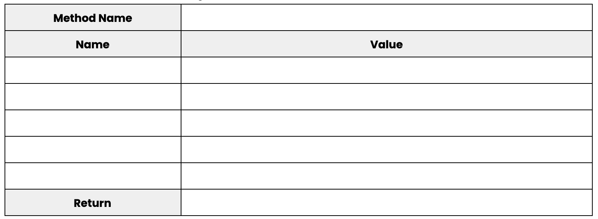

7.7. While Loops¶
In our mini-project about modifiers, you needed to define a createSchedule method. If you successfully defined this method, you would have written something like this:
public void createSchedule(String c1, String c2, String c3, String c4){
classes.add(c1);
classes.add(c2);
classes.add(c3);
classes.add(c4);
}
You probably didn’t break a sweat defining this method – it’s not too much work to write 4 statements over and over again after all. But how would you feel if I asked you to define a method that creates a schedule for 8 classes or gasp, an unknown number of classes?
In both those cases, we would need to lean on a structure found in Java called a loop. A loop can look like a few different things, all of which we will see over the next two weeks, but they all do the same thing: they all repeat something!
Having our computers repeat statements for us is actually really nice. It saves us a bunch of time programming and it allows us to generalize our programs a bit more so that they work for a larger set of inputs.
The first loop that you should practice using in your program is called a while loop. A while loop is a programming structure that repeats a set of statements as long as a boolean expression evaluates to true. Here is how we would use a while loop in our createSchedule method:
public void createSchedule(String c1, String c2, String c3, String c4){
int count = 1;
while(count <= 4){
classes.add("c" + count);
count++;
}
}
As you can see in the example above, a while loop can be created using this pattern:
while(condition){
//statements
}
The condition of a while loop is the boolean expression your computer will evaluate. The condition of a while loop should always be placed inside of the parentheses.
If the condition evaluates to true, then any statements found in between the curly braces will be executed. We refer to the collection of statements that is found in between the curly braces of a while loop as as the body of the while loop. After your computer executes the body of the while loop, it will return to the condition and determine if the condition still evaluates to true. If it does, the body of the while loop will be executed again. If the condition evaluates to false, then the loop will stop. In other words, the body of the while loop is skipped and any subsequent lines of code will be executed by your computer.
It is often important to declare a variable before you use a while loop in your program because this variable can be reassigned to new values as the loop repeatedly executes. We colloquially refer to this variable as the counter variable.
Why is a counter variable so important to use? The counter variable can be used in the condition of our while loop, which means the condition can eventually become false. In many cases, it is bad to have a condition that never becomes false! So much so, programmers have a name for this problem – it’s called an infinite loop. Duh duh duh!!! Infinite loops occur when a while loop never stops repeating itself. This sucks up a bunch of resources on your computer and eventually causes it to blow up!

Just kidding! Most modern computers have safeguards in place that will stop execution if it suspects an infinite loop is near by. This also means that your programs will fail to execute if you somehow write a condition in your while loop that never becomes false.
Let’s make sure we take a look at a more complex use of while loops. Let’s see if we can use a while loop to do more stuff with ArrayList objects! Examine this program and try to predict what the while loop does:
import java.util.ArrayList;
class ManipulateArrayLists{
/** Adds a range of integers an ArrayList.
* @param finalValue is the final integer found in the ArrayList.
* @return an ArrayList of Integers once the Integers have been added to the ArrayList.
*/
public static ArrayList<Integer> addNums(int finalValue){
/*
Remember, we can also have Integer and Double objects!
This is important because ArrayLists cannot store primitive
values within them.
*/
ArrayList<Integer> numbers = new ArrayList<Integer>();
int count = 0;
while(count <= finalValue){
numbers.add(new Integer(count));
count++;
}
return numbers;
}
}
class Main{
public static void main(String args[]){
ArrayList<Integer> numbers = ManipulateArrayLists.addNums(5);
}
}
Thinking about loops in your head can be hard. That’s why it’s important to trace through the loop’s execution using something I call “Memory Tables”. A memory table looks like this:
{kind=link}
Let’s see how we can use a Memory Table to predict what addNums will do when it is called like so: ManipulateArrayLists.addNums(5);.
Before you turn the page, take a look at the repl.it version of this program. Play around with the program to perfect your knowledge of while loops!